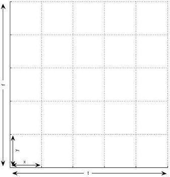

Programming Guide
|
CNS: Cortical Network Simulator Programming Guide |
For a brief overview of what a package is, click here.
Note that if you've obtained an existing package and you're only going to be building models that use those existing cell types, you might want to start with the next section, which focuses on building models. (It does refer back to this section for some concepts.) At some point you will probably want to make modifications to the cell types, at which point you will want to come back and study this section.
Now would be a good time to have a look at the files in cns/demopkg, or one of the other available packages.
The following table lists the source files that make up a package and the kind of information each contains.
| File Name | Purpose / Contents | Format |
package.m |
| Details. |
package.h |
| Free-format C++ code. |
package_base.m |
| Details. |
package_base.h | Free-format C++ code. | |
package_type.m |
| Details. |
package_type.h | Free-format C++ code. |
Packages must be compiled with the cns_build command. Compiling a package produces several files starting with "package_compiled_".
Note: whenever you change any of the source files in a package directory, you must re-run the cns_build command.
A package directory can contain other files; CNS ignores any file not starting with "package_".
The main package.m file looks like this:
classdef package < cns_package methods (Static) %------------------------------------------------------------------ function f = CNSFields % Define any model-wide fields here. (Details.) % Define any model-wide compile-time constants here. (Details.) end %------------------------------------------------------------------ % Any package-level MATLAB methods you may wish to add. (Details.) %------------------------------------------------------------------ end end |
Note that while we use MATLAB's classdef syntax, we do not make much use of MATLAB's object-oriented programming model. It is simply a convenient syntax for defining a type hierarchy. All the methods are static. We do not create MATLAB objects to represent models, layers, or cells. Rather, we build a model structure which CNS uses to instantiate a model on the GPU. Models, and the layers and cells that comprise them, live in GPU memory, and we use cns commands to access them from within MATLAB.
The ".m" file for the base type (package_base.m) must start like this:
classdef package_base < cns_base ... |
Otherwise it is the same as the ".m" file for any other, more specific cell types, which are defined as follows. Note that most of a cell type's definitions will be inherited by any subtypes of that type.
classdef package_type < package_supertype methods (Static) %------------------------------------------------------------------ function p = CNSProps % Define any type-specific properties here. (Details.) end %------------------------------------------------------------------ function f = CNSFields % Define any type-specific fields here. (Details.) % Define any type-specific compile-time constants here. (Details.) end %------------------------------------------------------------------ % Any type-specific MATLAB methods you may wish to add. (Details.) %------------------------------------------------------------------ end end |
When creating a new cell type, it's often most convenient to copy the ".m" file of another type and modify it.
Each property is defined by adding a line like this to the CNSProps method of the type's ".m" file.
For example:p.propname = value;
p.abstract = true;
| Property Name | Usage |
abstract |
Defaults to false. If set to true, this means the type exists only to be a supertype of other types. In a CNS model, you cannot create a layer of cells of an abstract type, only a subtype.The "base" type of a package is often abstract. |
dnames | Together, these properties define the dimensionality of a layer of cells of this type. Click here for details. |
synType |
If cells of this type are going to explicitly enumerate their input cells, use this property to specify which type of cells those inputs will be. This tells CNS what fields will be available to read from the input cells. You will want to be as specific as possible. If any type of cell can be an input, just specify p.syntype = 'base'. However, this would mean you could only read fields defined for all cell types, i.e. defined at the 'base' level.
|
p.dnames = {'f' 't' 'y' 'x'};
p.dims = {1 2 1 2};
p.dparts = {2 2 1 1};
dims and dparts tell CNS how each of the four dimensions is represented in the GPU's two dimensions. Here, dimensions 'f' and 'y' are assigned to internal dimension 1, with 'f' as the "outer" dimension (part 2) and 'y' as the "inner" dimension (part 1). This means that cells with adjacent 'y' values will be stored next to each other in GPU memory, while cells with adjacent 'f' values may be far apart. Dimensions 't' and 'x' are similarly assigned to internal dimension 2.
The choice of inner and outer dimensions has performance consequences: if some other cell is pooling over cells in this layer using nested

for loops, the inner loops should correspond to the inner dimensions.Here is an example of the simpler case where there are only two dimensions.
p.dnames = {'y' 'x'};
p.dims = {1 2};
p.dparts = {1 1};
p.dnames = {'f'};
p.dims = {1};
p.dparts = {1};
#BLOCKSIZE. For example, if your layer is represented internally as a (1 x 200) array (dimension 1 is of size 1) and the first element of #BLOCKSIZE is 16, 15/16 of your GPU's processors will be idle while computing this layer. Similarly, if dimension 1 is of size 17, you will be wasting 15/32 of your processing power. This should be taken into consideration when assigning external dimensions to internal ones.Note that dimensionality cannot be overridden by subtypes.
dmap, activates a powerful feature of the CNS framework. In networks where connectivity is assumed to be regular (i.e. cells do not have explicit lists of their inputs), a cell needs to be able to "find" its inputs, i.e., infer which cells in some other layer should be its inputs, based on its own position in its layer. This can be awkward for a number of reasons.Consider this common case. Say we have two 2-D layers:
Now each cell in layers 1 and 2 is positioned in a common coordinate space. A layer 2 cell can find its inputs simply by asking for its four nearest neighbors in each dimension.

The dmap property controls which dimensions get mapped like this. Consider our 4-D example above. If we only have limited receptive fields over dimensions 'y' and 'x', we need only map those two dimensions:
p.dnames = {'f' 't' 'y' 'x'};
p.dims = {1 2 1 2};
p.dparts = {2 2 1 1};
p.dmap = [false false true true];
cns_mapdim function helps you assign the common coordinates.
For example, suppose we want to define a 3-D layer type which is going to have two spatial dimensions (y and x) and a feature dimension (f):
p.dnames = {'f' 'y' 'x'};
p.dims = {1 1 2};
p.dparts = {2 1 1};
p.dnames = {'f' 'y' 'x'};
p.dims = {[1 2] 1 2};
p.dparts = {[2 2] 1 1};
m.layers{6}.size = {5120 400 400};
m.layers{6}.size = {[64 80] 400 400};
Each field is defined by adding a line like this to the CNSFields method of the appropriate ".m" file.
d.fieldname = {class, modifiers};
d.V_m = {'cv', 'dflt', -70.0};
package_type.m file, but fields with "model" scope are defined at the package level, i.e. the package.m file. (Note that subtypes inherit all the fields of their parent type.)
"'dflt', -70.0" is a modifier, supplying additional information about the field (in this case, a default value). The class determines which modifiers apply (see following sections).
| Class | Scope | Defined For | Public? | Size | Variable? | Description / How to Define |
| mp | model | package | yes | scalar or vector | no | Details. |
| mz | model | package | yes | scalar or vector | no | Details. |
| ma | model | package | yes | N-D | no | Details. |
| gp | group | type | define | scalar or vector | no | Details. |
| gz | group | type | no | scalar or vector | no | Details. |
| ga | group | type | define | N-D | no | Details. |
| lp | layer | type | define | scalar or vector | no | Details. |
| lz | layer | type | no | scalar or vector | no | Details. |
| la | layer | type | define | N-D | no | Details. |
| cc | cell | type | define | scalar or vector | no | Details. |
| cv | cell | type | define | scalar or vector | yes | Details. |
| sc | synapse | type | no | scalar or vector | no | Details. |
| sv | synapse | type | no | scalar or vector | yes | Details. |
Required syntax:
|
Optional modifiers:
|
Examples:
|
Required syntax:
|
Optional modifiers:
|
Examples:
|
'cache' option can mitigate this).
Required syntax:
|
Optional modifiers:
|
Examples:
|
'cache' option can mitigate this).
Cell fields can optionally be declared private, meaning they are not readable by other cells. Private 'cv' fields are useful for storing internal state variables in dynamic models, and private 'cc' fields can hold per-cell constants that are only used within each single cell.
Currently, only private cell fields can hold multiple (vector) values. The number of values must be the same for all cells in a layer.
Required syntax:
|
Optional modifiers:
|
Examples:
|
cns_getconsts function) and from within kernels (by name).A floating-point constant can be defined like this:
An integer constant is defined like this:d.dt = 0.0001;
d.spk_dur = {11, 'int'};
"fieldname_dflt". Conversely, defining such a constant is an alternative method for assigning a default value to a field.
package.m file), these files are a convenient place to put additional MATLAB methods.
Currently, the only such method that CNS will automatically call, if it is present, is a CNSInit method defined in the package.m file. It will be called just before a model is initialized on the GPU, and is a good place to put code that fills in some fields for you automatically. There is an example of this in the demo package; see the file cns/demopkg/demopkg.m. To call methods other than this one, you can use ordinary MATLAB method call syntax; however, in some cases it is safer to use the cns_call function.
Remember that CNS models run on the GPU, not inside MATLAB, so any additional MATLAB methods you create cannot affect a running CNS model (unless they call the cns function). They are, however, a good place to put code for setting up models.
To add a package-level MATLAB method, just add it to the package.m file. Type-specific MATLAB methods go in the appropriate package_type.m file. All such methods must be static.
A subtype can override a method provided by a supertype just by declaring a method of the same name. If the subtype's version needs to call the overridden version, it can do so using the function cns_super.
Every type of cell has a single kernel, or no kernel. During a single network iteration, every cell (except those without a kernel) generally gets its compute kernel called once (although this can be changed). In some networks (e.g., spiking simulations) all the cells can be computed in parallel, while in other networks, layers must be computed in a specific order.
Kernels are written in C++, augmented by macros generated by CNS which mainly assist in reading and writing fields. Consider the following kernel, which is from the demo package. It applies a bank of different 2-D filters to an image, generating a 3-D result. Like all kernels, this code is responsible for computing only a single cell in the layer. CNS macros are shown in RED with names supplied by the package author in BOLD. The rest is ordinary C++.
#BLOCKSIZE 16 16 // Find coordinates of input cells in the previous layer. int y1, y2, x1, x2; FIND_LAYER_Y_NEAREST(PZ, FVALS_Y_SIZE, y1, y2); FIND_LAYER_X_NEAREST(PZ, FVALS_X_SIZE, x1, x2); // Iterate over input cells. float res = 0.0f; float len = 0.0f; for (int j = 0, x = x1; x <= x2; j++, x++) { for (int i = 0, y = y1; y <= y2; i++, y++) { // Read value of input cell. float v = READ_LAYER_VAL(PZ, 0, y, x); // Read corresponding filter value. float w = READ_FVALS(i, j, THIS_F); res += w * v; len += v * v; } } res = fabsf(res); if (len > 0.0f) res /= sqrtf(len); // Write out value of this cell. WRITE_VAL(res);
cns_build compiles a package, it needs to compile a kernel for every non-abstract cell type. It starts by looking for the file package_type.h. If that file doesn't exist, cns_build will look for the supertype's .h file, and so on up the hierarchy.
It is also possible for an abstract cell type to define a "template" kernel which contains placeholders that get filled in with code provided by a subtype. See the #PART and #INCLUDEPART preprocessor directives.
Most standard C++ mathematical functions are supported.
It is important to note that GPUs are only fast for 32-bit quantities (or smaller). Your code should mainly use the datatypes float and int. Avoid the double type.
sqrtf(x) instead of sqrt(x).
0.0f.
#BLOCKSIZEFor example:
#NULL
Note: the cns_build function has a help option that lists all the macros available to each cell type's kernel.
| Macro(s) | Description |
ITER_NO |
The current network iteration number. Initialized to 1 by the cns('init') command. Automatically incremented by the cns('run') command. Can also be queried or changed from MATLAB using the cns('get') and cns('set') commands. (Note: ITER_NO is zero-based in kernels, but one-based in MATLAB.)
|
PRINT(format, ...) |
Use this instead of C++'s printf function to print output to the terminal. Note that this only works when running CNS in debug mode. Uses the same syntax as printf.
|
ERROR(format, ...) |
Just like PRINT above, except that it halts execution. As with PRINT, it only works in debug mode.
|
CNS_INTMIN CNS_INTMAX CNS_FLTMIN CNS_FLTMAX |
The minimum and maximum values of the int and float datatypes in CNS, respectively. CNS also provides equivalent MATLAB functions (same names but lower case) that return these values.
|
| Macro(s) | Description |
type_PTR |
This is a C++ class that can hold a pointer to a layer of a particular type of cells. Use this class if you need to define a local (C++) variable to hold such a pointer (whose value would be retrieved using one of the macros immediately below). Such pointers are used as inputs to many other macros.
For example (assuming a cell type called "weight" and a multivalued pointer field called "pzs" that contains pointers to "weight" layers): int yc = WEIGHT_Y_SIZE(PZS(i)); |
THIS_Z |
Returns a type_PTR to the current layer, where type is the current type.
|
field field(e) |
Returns a type_PTR to another layer, where type is the type of that layer.
|
NUM_field |
The number of values in a multivalued pointer field.
|
dim_SIZE type_dim_SIZE(z) |
Return the number of cells along a particular dimension of this or another layer.
|
THIS_dim |
Zero-based integer coordinate of this cell in its layer along a particular dimension.
|
FIND_type_dim_NEAREST(z, n, &v1, &v2) FIND_type_dim_WITHIN (z, r, &v1, &v2) FIND_type_dim_NEAREST(z, n, &v1, &v2, &i1, &i2) FIND_type_dim_WITHIN (z, r, &v1, &v2, &i1, &i2) |
Find a range of (zero-based integer) coordinates of other cells that are close to this cell in common coordinate space along a particular dimension.
The first two macros return false if the returned range ( v1 - v2) is smaller than expected, i.e., had to be adjusted so as not to contain invalid coordinates.
The last two macros return false if the returned range (
Note: |
THIS_dim_CENTER type_dim_CENTER(z, c) |
Return the position in common coordinate space of this cell or a cell in another layer along a particular dimension. This is a floating point number.
Note: cns_center is the equivalent MATLAB function.
|
FIND_type_dim_NEAREST_AT(z, p, n, &v1, &v2) FIND_type_dim_WITHIN_AT (z, p, r, &v1, &v2) FIND_type_dim_NEAREST_AT(z, p, n, &v1, &v2, &i1, &i2) FIND_type_dim_WITHIN_AT (z, p, r, &v1, &v2, &i1, &i2) |
These macros are the same as the above FIND_type_dim_... macros, except they find cells near a specified point in common coordinate space (along the relevant dimension). They take one additional parameter:
Note: cns_findnearest_at and cns_findwithin_at are the equivalent MATLAB functions.
|
| Macro(s) | Description |
NUM_SYN | The number of explicit synapses this cell has. An integer. |
SELECT_SYN(e) |
Makes a particular synapse "active", which means that all macros that reference fields of presynaptic cells or synapse fields will refer to this synapse (until the next SELECT_SYN call).
|
SYN_Z |
Returns a pointer to the layer in which the currently active presynaptic cell (as determined by SELECT_SYN) resides. Not required if you only want to read fields of presynaptic cells or synapse fields, but useful if you want to read other information from the presynaptic layer (using macros in this section).
|
SYN_dim |
Returns the zero-based integer coordinate (along a particular dimension) of the currently active presynaptic cell in its layer. Not required if you only want to read fields of presynaptic cells or synapse fields, but useful if you want to read information from other cells in the presynaptic layer (using macros in this section).
|
| Macro(s) | Description |
field field(e) type_field(z) type_field(z, e) |
Return the value of a parameter field defined for (a) the model as a whole, (b) this layer, or (c) another layer.
|
NUM_field NUM_type_field(z) |
The number of values in a multivalued parameter field.
|
| Macro(s) | Description |
READ_field READ_field(e) |
Return the value of a cell field (for this cell).
|
WRITE_field(v) WRITE_field(e, v) |
Update the value of a cell variable (for this cell).
|
NUM_field |
The number of values in a multivalued cell field. Note that this number will be the same for all the cells in a layer.
|
READ_type_field(z, c1, c2, ...) READ_PRE_field |
Return the value of a public cell field for an arbitrary cell, or for the currently selected presynaptic cell.
Note: the READ_type_field macro is often used inside loops which can benefit from optimization. See this section for faster alternatives.
|
| Macro(s) | Description |
SYN_TYPE | Return the synapse type of the currently selected synapse. |
READ_field READ_field(e) |
Return the value of a synapse field for the currently selected synapse.
|
WRITE_field(v) WRITE_field(e, v) |
Update the value of a synapse variable for the currently selected synapse.
|
NUM_field |
The number of values in a multivalued synapse field. Note that this number will be the same for all synapses of all the cells in a layer.
|
| Macro(s) | Description |
field_dim_SIZE field_dim_SIZE(e) type_field_dim_SIZE(z) type_field_dim_SIZE(z, e) |
Return the number of cells along a particular dimension of an N-D array field belonging to (a) the model as a whole, (b) this layer, or (c) another layer.
|
READ_field(c1, c2, ...) READ_field(e, c1, c2, ...) READ_type_field(z, c1, c2, ...) READ_type_field(z, e, c1, c2, ...) |
Return a value from an N-D array field.
Note: these macros are often used inside loops which can benefit from optimization. See this section for faster alternatives. |
NUM_field NUM_type_field(z) |
Return the number of N-D arrays held in a multivalued N-D array field.
|
The macro names are just UPPER case versions of the constant names. For example, a compile-time constant called "spk_dur" will be accessible using macro SPK_DUR.
READ_type_field macro. CNS provides two somewhat faster sets of macros for doing this.The first set of macros introduces the concept of a handle. In your code, instead of this:
for (...) {
...
float v = READ_type_field(z, c1, c2, ...);
...
}
[type_]field_HANDLE h = GET_type_field_HANDLE(z);
...
for (...) {
...
float v = READ_[type_]field_HANDLE(h, c1, c2, ...);
...
}
field of layer z (for all cells). This saves having to find that address for each loop iteration. Once you have the handle, you can use handle-based macros in place of macros that take z.
| Macro(s) | Description |
[type_]field_HANDLE |
This is a C++ class that holds a handle (described above) to a public cell field in a layer. You get a handle using this macro.
|
GET_type_field_HANDLE(z) |
Returns a handle to a public cell field in a particular layer. The handle can then be passed as a parameter to the macros below.
|
READ_[type_]field_HANDLE(h, c1, c2, ...) |
Returns the value of a public cell field for a cell in a layer, using a handle.
|
[type_]field_HANDLE_dim_SIZE(h) |
Returns the number of cells along a particular dimension of the layer pointed to by a handle.
|
The second set of macros makes a further optimization, but requires understanding how an N-D layer of cells is mapped internally to 2-D. Normally when reading the value of a cell's field, you have to provide a full set of N-D coordinates (c1, c2, ...) to identify the cell; CNS automatically converts these to 2-D coordinates and then performs the lookup. The following macros let you work directly in the internal 2-D space.
| Macro(s) | Description |
GET_type_field_IPOS(z, c1, c2, ..., &y, &x) | TODO |
GET_[type_]field_HANDLE_IPOS(h, c1, c2, ..., &y, &x) | TODO |
READ_[type_]field_IPOS(y, x) | TODO |
| Macro(s) | Description |
[type_]field_HANDLE |
This is a C++ class that holds a handle to an N-D array field. You get a handle using one of these macros.
|
GET_field_HANDLE GET_field_HANDLE(e) GET_type_field_HANDLE(z) GET_type_field_HANDLE(z, e) |
Return a handle to an N-D array field belonging to (a) the model as a whole, (b) this layer, or (c) another layer. The handle can then be passed as a parameter to the macros below.
|
READ_[type_]field_HANDLE(h, c1, c2, ...) |
Returns a value from an N-D array field, using a handle.
|
[type_]field_HANDLE_dim_SIZE(h) |
Returns the size (along a particular dimension) of the N-D array field pointed to by a handle.
|
| Macro(s) | Description |
GET_field_IPOS(c1, c2, ..., &y, &x) GET_field_IPOS(e, c1, c2, ..., &y, &x) GET_type_field_IPOS(z, c1, c2, ..., &y, &x) GET_type_field_IPOS(z, e, c1, c2, ..., &y, &x) | For cached N-D array fields only. TODO |
GET_[type_]field_HANDLE_IPOS(h, c1, c2, ..., &y, &x) | TODO |
READ_[type_]field_IPOS(y, x) | For cached N-D array fields only. TODO |
READ_[type_]field_IPOS(h, y, x) | For uncached N-D array fields only. TODO |
#PART and #INCLUDEPART#PART and #INCLUDEPART, we specify the general form of the algorithm once, in an abstract supertype, with placeholders that get filled in by the subtypes.
Example (abstract) supertype kernel. #INCLUDEPART lines are placeholders which will be replaced by code from subtypes:
Example subtype kernel #1 (convolution). Here,
#BLOCKSIZE 16 16 int y1, y2, x1, x2; FIND_LAYER_Y_NEAREST(PZ, FVALS_Y_SIZE, y1, y2); FIND_LAYER_X_NEAREST(PZ, FVALS_X_SIZE, x1, x2); float res = 0.0f; for (int j = 0, x = x1; x <= x2; j++, x++) { for (int i = 0, y = y1; y <= y2; i++, y++) { float v = READ_LAYER_VAL(PZ, 0, y, x); float w = READ_FVALS(i, j, THIS_F); #INCLUDEPART update } } #INCLUDEPART done WRITE_VAL(res);
#PART is used to identify code used to fill in each placeholder.
Example subtype kernel #2 (distance):
#PART update res += w * v; #PART done // Nothing.
Subtype kernels defined using
#PART update float diff = w - v; res += diff * diff; #PART done res = sqrtf(res);
#PART can also override the parent type's #BLOCKSIZE.
These directives can be used recursively: a #PART section can itself contain #INCLUDEPART lines which will insert code from a yet more specific subtype.
To use loop unrolling, replace your C++ for statement with one of these #UNROLL_START directives:
You must also replace the closing
This is semantically equivalent to the following forline:for (symbol = lower; symbol cond upper; symbol++) {Note: if none of the following parameters are given, the loop will always execute exactly
factor- The unroll factor, i.e. the number of iterations that the preprocessor will group into a single iteration.
symbol- A symbol within the body of the loop that will be replaced by the value of the loop counter. Make sure it is a distinctive string of characters that isn't a substring of other identifiers inside the loop. For example, use
%i%rather than justi.factortimes.
lower- The starting value of the loop counter. Can be a constant or the name of a local C++ variable. Defaults to
0.cond- Either
<or<=. Defaults to<.upper- The upper bound of the loop counter. Can be a constant or the name of a local C++ variable.
} of the for loop with the directive #UNROLL_END, and replace any break statements with #UNROLL_BREAK. Both these directives must appear on their own lines.
Fast local arrays are declared at the beginning of your kernel.
Here are some example local array definitions:
Within kernels you access array elements using macro syntax. For example:#ARRAY gcond 10 (a 10-element array of floats) #ARRAY syn_t 5 int (a 5-element array of ints) #ARRAY xyz 8 double (an 8-element array of doubles)
Note that the size of shared memory is limited (to 16KB in current GPUs), and using a lot of arrays will mean you have to make the cell type's block size smaller.GCOND(3) = 3.6f; float gc = GCOND(0); for (int i = 0; i < 5; i++) SYN_T(i) = 0; ...
package.h. in your package directory.
Here is an example package.h file that contains two helper functions:
Each function definition must start with the word
INLINE float Sigmoid(float x) { return 1.0f / (1.0f + expf(-x)); } INLINE float DSigmoid(float y) { return y * (1.0f - y); }
INLINE.
cns_build function has an info option that displays some useful information, such as:
cns_build function for details.